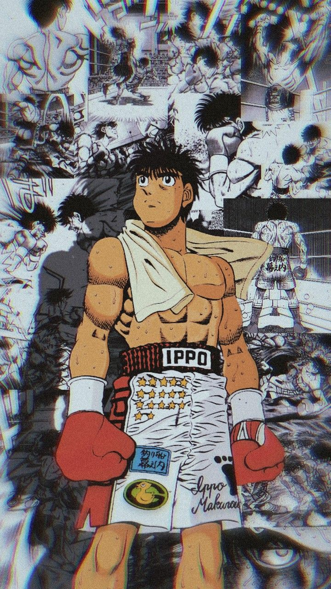

Imagen representativa: Personaje Ippo
El atributo alt es fundamental para la accesibilidad web, permitiendo que personas con discapacidad visual entiendan el contenido y ayudando al SEO de nuestra página.